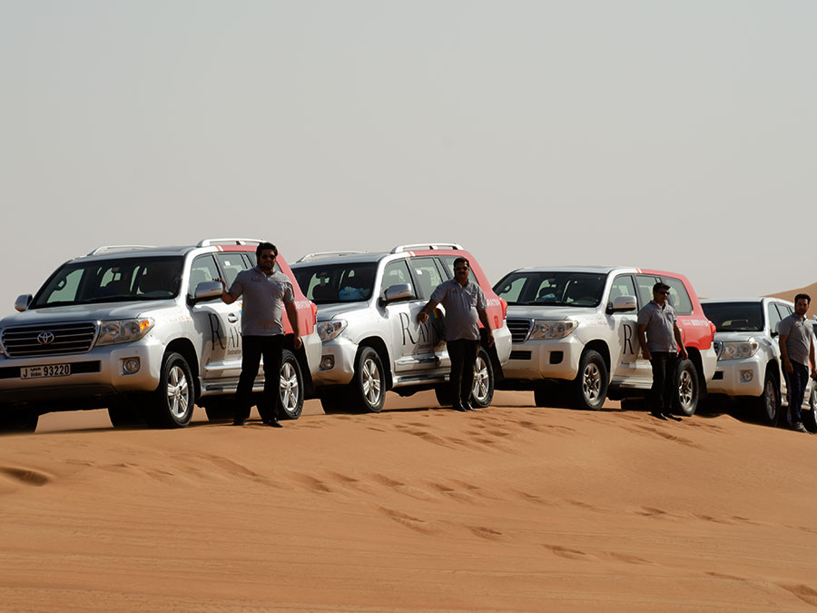
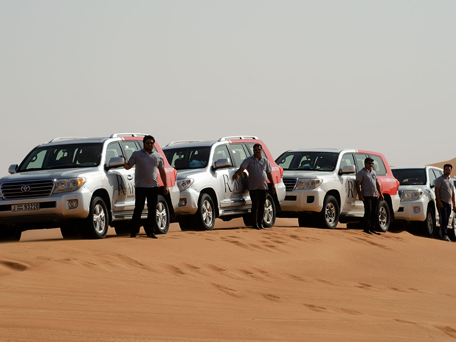
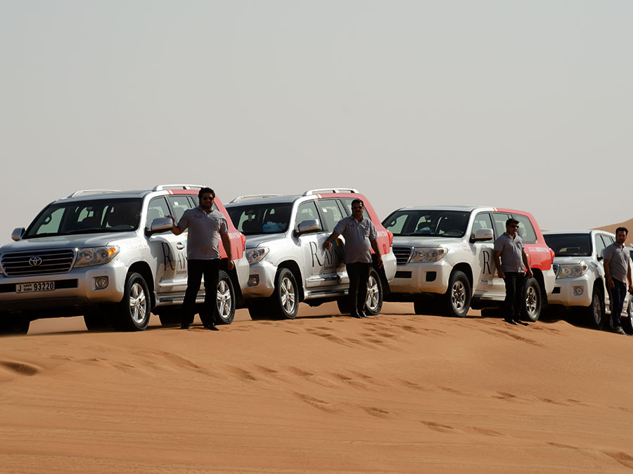

A desert safari in Dubai is a popular tourist activity that allows visitors to experience the beauty and thrill of the Arabian desert. Typically, it involves a guided tour that takes you on an adventure through the desert in a 4x4 vehicle, often a rugged SUV or a luxury Land Cruiser.
During the safari, you can enjoy activities such as dune bashing, which is driving over sand dunes at varying speeds, giving you an adrenaline rush as you ride the shifting sands. You may also have the opportunity to try sandboarding, where you glide down steep dunes on a sandboard similar to snowboarding.
Additionally, many desert safaris include stops at traditional Bedouin-style camps, where you can experience authentic Arabian hospitality. At these camps, you can enjoy activities like camel riding, henna painting, and trying on traditional Arabic attire. You'll also be treated to a delicious barbecue dinner buffet accompanied by live entertainment such as belly dancing and traditional music under the starlit desert sky.
Overall, a desert safari in Dubai offers an unforgettable blend of adventure, cultural immersion, and natural beauty, making it a must-do experience for visitors to the region.
>
Types of Desert:There are various types of desert safaris available in Dubai, catering to different preferences and budgets. These include morning safaris, evening safaris, and overnight safaris. Each type offers a unique experience and activities tailored to the time of day.
Dune Bashing
One of the highlights of a desert safari is dune bashing, where skilled drivers maneuver 4x4 vehicles over the sand dunes in a thrilling ride. It's a bumpy and exhilarating experience that provides an adrenaline rush while showcasing the stunning desert landscape.
Sandboarding
Sandboarding is another popular activity during desert safaris. It's similar to snowboarding but done on sand dunes instead of snow. Visitors can glide down the slopes of the dunes on specially designed sandboards, offering a fun and adventurous experience.
Camel Riding
Many desert safaris include camel riding, allowing visitors to experience the traditional mode of transport in the desert. Riding a camel provides a unique perspective of the desert landscape and offers insight into the Bedouin way of life.
Bedouin Camp
ExperienceMost desert safaris include a visit to a traditional Bedouin-style camp, where visitors can immerse themselves in Arabian culture. Here, you can relax in traditional Arabic tents, enjoy refreshments like Arabic coffee and dates, and participate in various activities such as henna painting and falconry displays.
Entertainment
Evening desert safaris often feature live entertainment performances, including belly dancing, tanoura dancing (a traditional Sufi dance), and fire shows. These performances add to the ambiance of the desert camp and provide cultural entertainment for visitors.
Cuisine
A highlight of any desert safari is the delicious Arabian cuisine served at the camp. Visitors can enjoy a buffet dinner featuring traditional dishes such as grilled meats, salads, bread, and desserts. Vegetarian and non-vegetarian options are usually available to cater to different dietary preferences.
**Photography OpportunitiesThe desert landscape offers stunning photo opportunities, especially during sunset and twilight. Visitors can capture breathtaking views of the sand dunes, camel caravans, and desert flora and fauna, creating lasting memories of their desert safari experience.
Overall, a desert safari in Dubai offers a perfect blend of adventure, cultural immersion, and relaxation, making it a memorable experience for visitors of all ages.


 
